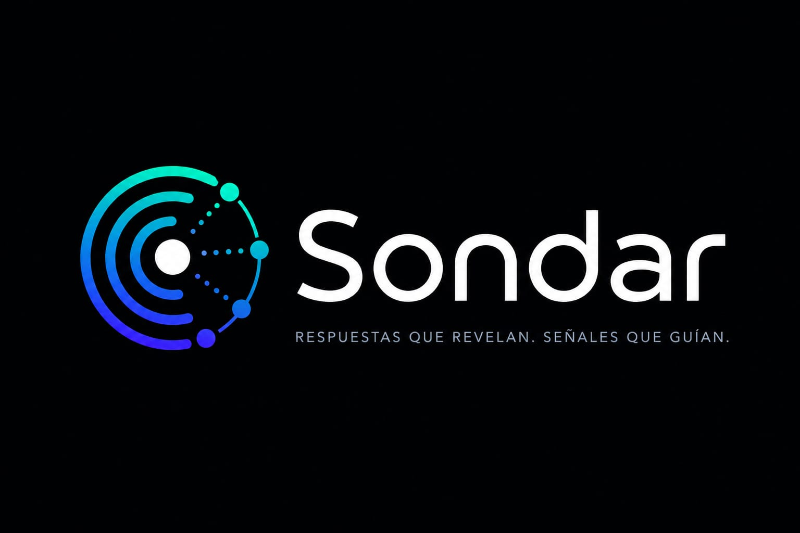
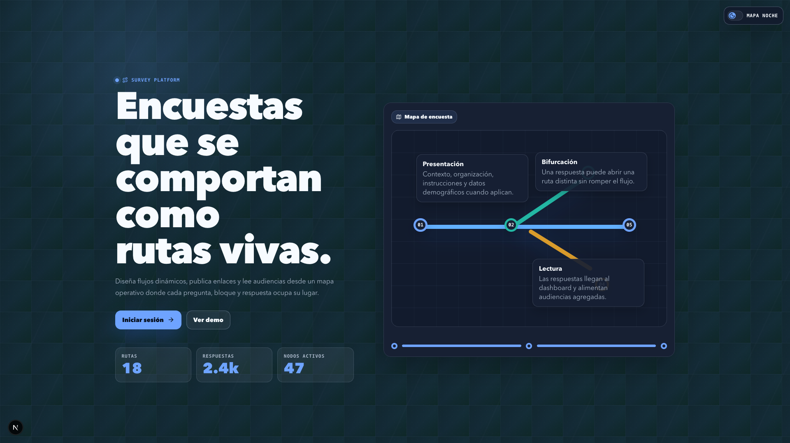

Disena estudios, publica enlaces y deja que cada respuesta abra la siguiente ruta.

Home, OAuth con Google, dashboard, audiencias, configuracion y encuestas publicas bajo una misma direccion visual.
Cruza resultados, detecta patrones y comparte metricas sin perder el contexto del estudio.